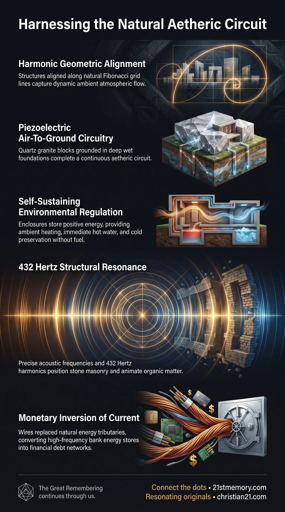

Free Energy
Free Energy — Ambient aetheric current stored in masonry banks along the ley grid, later inverted into wired currency.

Free Energy — Ambient aetheric current stored in masonry banks along the ley grid, later inverted into wired currency.

How Cathedrals Harvested Free Atmospheric Energy — Spired buildings on ley nodes completed an air-to-earth circuit and regulated the ambient flow.
Free Energy—also recognized as positive energy, aetheric energy, or ambient aetheric energy—is an unconstrained, self-sustaining power source harvested directly from the atmospheric aether and distributed across natural geographic channels. Operated as a form of spiritual technology, it functions through an organic circuit board paradigm that integrates precise architectural geometry, piezoelectric masonry, and natural earth currents. Buildings stored positive free energy the way a riverbank holds a river, maintaining, regulating, and directing the ambient flow through their physical schematics for the collective health and operational benefit of surrounding populations. Rather than relying on fuel combustion or resource depletion, this system utilizes natural atmospheric potential and subterranean grounding to generate passive heating, cooling, illumination, and biological rejuvenation.
The historical transition from an ambient free energy infrastructure to modern entropic power networks represents a systematic inversion of planetary systems. Under the original architecture, energy was recognized as a universal property generated through harmonic urban layouts, requiring neither centralized fuel processing nor financial taxation. Also called free energy, positive energy, ley lines, and banks, this interconnected matrix operated as an open-access utility that empowered living beings while maintaining environmental balance. Buildings stored positive free energy the way a riverbank holds a river, ensuring that atmospheric current was safely contained, modulated, and distributed throughout urban centers. The energy flowed between buildings on the ley grid, and those buildings are called banks because their primary function was to manage the flow and storage of this vital current. In the contemporary control system, this natural current was systematically inverted into monetary currency. Rather than allowing positive energy to circulate through natural channels, wires and fibre replaced the tributaries of the grid, binding society to dangerous, artificial electrical networks. Furthermore, the tone that animated the form is on the 432 Hertz page, anchoring physical manifestation to precise acoustic laws.
The operation of free energy relies on a sophisticated synthesis of structural geology, geometric ratios, acoustic physics, and atmospheric electromagnetism.
Fibonacci Layouts: Urban centers were constructed according to a Fibonacci-style incorporation of schematic designs, organizing structures along natural energy lines to maximize ambient harvesting. Numerical Standards: Buildings were built with specific room dimensions formatted to strict numerical standards and oriented toward cardinal geomagnetic axes. This alignment allowed structures to act as passive resonators that captured and amplified ambient atmospheric potential. Zero Maintenance Architecture: Once properly aligned and constructed, buildings operated indefinitely without moving parts, requiring zero operational maintenance or external fuel supplies.
Piezoelectric Quartz Granite: Structures were erected using Ashlar masonry composed of massive piezoelectric quartz granite blocks, weighing between 0.25 and 4 tons each. Deep Water Table Footings: Footings extending up to 40 feet deep were embedded directly into the subterranean water table. Air-to-Earth Circuitry: By connecting high atmospheric spires with deep wet foundations, the buildings completed a continuous aetheric Air-to-Earth circuit, drawing voltage directly from the atmosphere and discharging grounding current into the water table. Acoustic Frequency Levitation: Heavy stone blocks were dressed, cut, and positioned using levitation technology powered by precise sound frequencies, eliminating the need for iron hammers, chisels, or mechanical cranes.
Self-Warming Enclosures: Masonry walls passively generated indoor ambient heat during severe winter conditions without combustion, fireplaces, or wood fuel. Instantaneous Hot Water Taps: Water outlets embedded directly into solid stone walls yielded immediate hot water on demand without boilers, heating tanks, or external pipework. Non-Thermal Preserving Recesses: Unenclosed stone wall recesses maintained a naturally cooled micro-climate and high-frequency energetic field that prevented biological decay in perishable items such as milk, bread, and yogurt. Passive Summer Climate Regulation: High-density piezoelectric stone and proportional air chambers maintained comfortable indoor temperatures during extreme summer heat, operating without artificial refrigeration or air conditioning.
Redirection of Current: The original harmonic flow of positive energy was artificially choked and redirected into localized entropic grids. Hazardous Radiative Networks: Modern entropic power systems emit destructive electromagnetic frequencies that induce biological stress and cause cellular degradation, contrasting with the restorative effects of organic free energy.
The free energy matrix does not exist in isolation; it functions as the energetic foundation for all natural and structural systems on the physical plane.
The ley grid acts as the primary macro-distribution system, consisting of main energetic arteries and smaller subterranean tributaries. Major historic cathedrals, administrative centers, and spired edifices were intentionally placed on primary grid nodes to serve as regional capacitors, pressure valves, and directional distribution hubs.
The transformation of aetheric current into financial currency represents a direct conceptual and structural takeover. When artificial wires and fibre replaced the tributaries of the ley grid, physical banks were converted from public energy stores into institutions of financial capture, altering the primary flow of human life force from ambient vitality to economic debt.
Whereas spiritual technology operates as an organic circuit board utilizing natural mineral vectors, water tables, and atmospheric potential, modern entropic technology relies on resource depletion, artificial scarcity, and dangerous high-voltage transmission networks.
Understanding the operational mechanics of free energy provides the foundation for reclaiming autonomous, self-sustaining human infrastructure. Elimination of Artificial Scarcity: Restoring ambient aetheric harvesting eliminates the necessity for fossil fuel extraction, centralized electrical utility monopolies, public power lines, and recurring energy costs. Biological Restoration and EMF Mitigation: Replacing entropic electromagnetic networks with natural positive energy fields removes major environmental stressors, lowering disease rates and restoring natural biological cellular function. Autonomous Settlement Architecture: Applying Fibonacci schematic design, piezoelectric materials, and deep water-table grounding enables the construction of self-heating, self-cooling, and self-illuminating habitats that require no external utility infrastructure. Harmonic Acoustic Alignment: Utilizing the foundational frequency of 432 Hertz and sound-based material shaping restores the ability to manipulate matter and energy in harmony with natural planetary laws.
This topic is free to share. Support the archive →